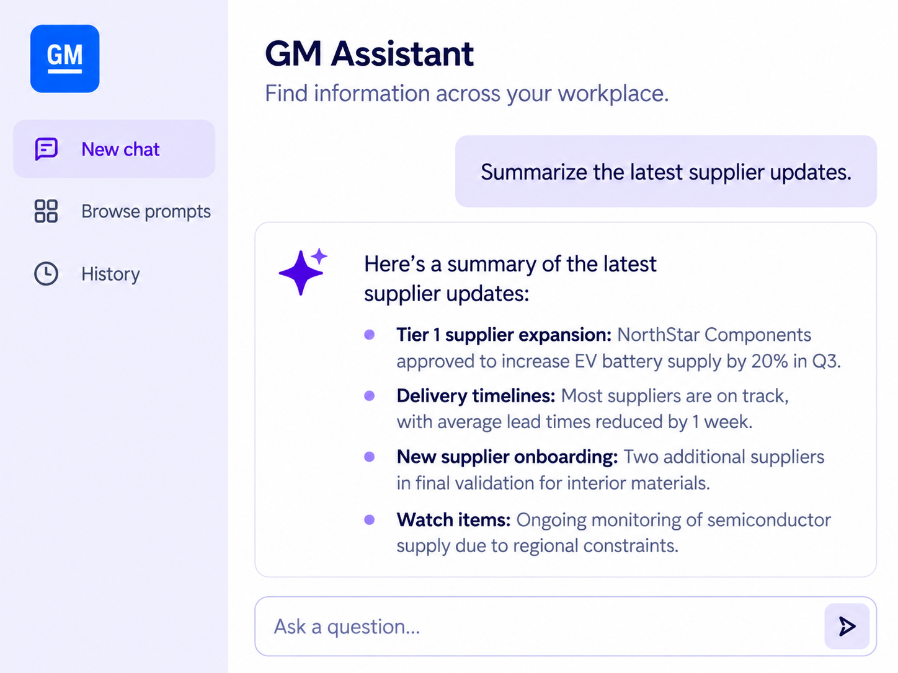

General Motors / 02
Electron AI Assistant
Helped build an internal AI assistant for finding information and navigating resources.

01 / The problem
What needed to change.
Employees across the organization spent significant portions of the workday manually searching for information, internal resources, and workflow support. Electron Chatbot introduced LLM-powered assistance into the GM workplace to improve efficiency, accelerate information retrieval, and modernize internal workflows.
02 / My contribution
Where I made a difference.
- Collaborated with a cross-functional development team to implement one of GM's first enterprise AI chatbot experiences.
- Helped bring the platform from concept to production by contributing to implementation and overall system functionality.
- Contributed to modern frontend development, backend integration, AI-driven workflows, and enterprise usability considerations.
- Supported scalable conversational interfaces employees could rely on in daily workflows.
- Participated in cross-functional Agile development around enterprise AI productivity tooling.
03 / Product capabilities
What the product supported.
- AI-powered conversational assistant
- Large Language Model integration
- Enterprise knowledge retrieval
- Internal resource and workflow assistance
- Intelligent search and navigation support
- Daily productivity enhancement tools
04 / Outcome
Why it mattered.
The Electron Chatbot significantly reduced the time employees spent locating information and completing repetitive search-related tasks. The platform became actively used in daily workflows and demonstrated the practical value of AI integration within a large enterprise environment.